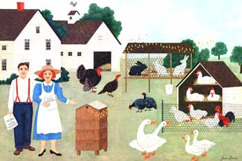
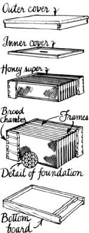
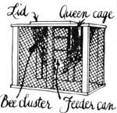
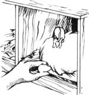
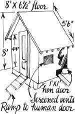
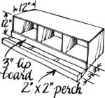
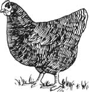
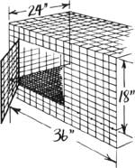
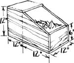

Taking On Livestock, Part I
By John Vivian
March/April 1987
MOTHER'S HANDBOOK
How to choose the right food-producing animal for your home.
Illustrations By Kay Holmes Stafford
Many good folks dream of the day they can exchange the noise, dirt, and pressure of city life for the tranquility of a country place with a cozy house, a big garden-and livestock. It's the animals that really make a rural home special, isn't it? Only with a flock of glossy-feathered poultry, a few gentle sheep, a mare with a frisky colt, or maybe even a great-eyed Jersey cow does the picture of country living come alive.
But there's a hitch, a big hitch. While the house will wait patiently for its repairs and you can make up for a week's garden neglect with a hose and hoe, livestock demand continual care and attention. Many new country dwellers populate the barn before they're ready to take on the challenges involved, and then find their long-anticipated rural tranquility transformed into plain old drudgery. They can't even get away once in a while not once Daisy's marvelous milk machine starts turning their meadow grass into two or three gallons of Grade A every day.
Don't let yourself become unwittingly indentured by what I call the livestock trap, and end up as much servant to your animals as they are to you. Think through each acquisition of a living creature...know how it will change your life before you take it on...learn essential management techniques in advance...and build your animal facilities ahead of time. Do all that, and livestock can be a major satisfaction of country living.
In this two-part series, I'll move from what I consider the least to the most demanding livestock and tell what you should know, good and bad, about each of the main barnyard creatures before you take it on. That way you'll be better able to pick the ones that are right for you. (I'll even tell you how to get rid of any that don't work out.)
Now, I won't tell you my long story about the spring I learned to string fence through cold New England rain and biting insects while my newly arrived piglets and goats merrily trashed the milking parlor. Just believe me when I recite this crucial rule: Take on only one type of animal at a time. And don't be in too big a rush to get started, either. Be sure you have the garden in, the house livable, the well flowing in reliably, and the septic system flowing out even more reliably before you so much as look at livestock. Then get the fences up, pens built, water piped, and hay racked before you actually adopt your first animal.
Bees First
Actually, that last sentence helps explain why I recommend a colony or two of Apis mellifera for your first venture beyond gardening: Honeybees don't need any pasture, pens, watering, or feeding. They take less than a square yard of land per hive, and can be put most anywhere, as long as their flight path doesn't interfere with human or animal activity.
And managing a hive takes very little time, only about five to 10 hours a year (see Fig. 1). The bees take care of all their breeding, feeding, and watering needs, except for the occasional early spring when their own honey stores run short and you have to supply sugar water for a few weeks. What's more, in most places, the state bee inspector will give your colonies a free annual check-up for disease-whether you want it or not.
You may consider an individual bee to be nothing but a loud buzz with a sting attached, but a healthy colony is a warm (90°F or more in the middle) and vibrant community of up to 100,000 individual creatures. Its intricate workings are more fascinating than the behavior of any poultry or four-legged stock.
And there's a satisfaction to keeping bees that's lacking in most other animal husbandry. You'll experience an altogether different thrill from handling frames of comb covered with thousands of bees. They are gently humming insects pacified by the fumes from your smoker, to be sure (Fig. 2). But almost every one comes equipped with a stinger, and it is your beekeeping skill and patience that keep those stingers sheathed. There's a stimulating sense of risk to working bees-just enough danger to spice up the day.
Then, of course, there's the reward of your own golden and flower-scented honey, pooling with butter on a fresh-baked bran muffin. While a good hive in a good location can produce over 100 pounds of honey a year, even an average colony should give you at least 20 to 30 pounds (unless the weather or bees fail completely).
What are the drawbacks to beekeeping? Stings, of course-even the best hive tenders get stung. But an experienced backyard beekeeper can reduce the occurrence to a rarity, scrape that occasional stinger out quickly to practically eliminate venom intake, and actually develop an immunity to bee venom. (Note: A small proportion of the populace is allergic to bee venom. If anyone in your family has allergy problems, take a trip to the physician for a stinging-insect sensitivity test before you take up bees.)
Differentiate early between pets and beasts that will be food.
And while small-scale beekeeping doesn't take much time once you know what you're doing, it does take some skill. (And it takes considerable time those first couple of beekeeping years to gain those skills.) You have to know what to look for in a hive (and how to do it without upsetting the inhabitants), how to reduce swarming (the tendency colonies have to split in half in spring, with one half leaving your hive), and several other tricks of the trade (such as harvesting honey without harvesting bees). Your management skill is necessary to a colony's health, growth, and production. Without it, your colonies may, in time, dwindle and die.
How do you get that skill? From reading and experience, sure, but initially the best way to learn-and to see if beekeeping suits you-is to work some colonies with an experienced apiarist. Ask for the names of some teaching beekeepers at the feed store or county extension agent's. An outing or two with an experienced person can help you get over the initial nervousness any novice feels when adopting a few thousand well-armed insects.
Right now, in spring, is the time to start keeping bees. You can buy your equipment-hive body, internal frames, and starter honeycomb-from a mail-order or local bee supply house. The easy-to-assemble materials for a complete hive will cost you about $100 (Fig. 3). You can then mail-order a starter colony for around $30 (Fig. 4). You may be able to purchase an established colony locally for about $100, but be certain first that the hive has been inspected and is free from disease. Then you'll also need a bee veil and hat, gloves, smoker, hive tool (for opening and manipulating the hive)-another $50. And remember, many folks recommend starting with two colonies, in case one fails.
Your ongoing expenses, however, will be small: replacement starter comb at a few dollars a box and maybe a $6 queen bee every year or two so you can make sure your colony's egg layer is in top shape. But watch out for another potential drawback: "bee fever." That beginner's over enthusiasm can tempt you to buy lots of hives and purchase expensive gear such as a $200 honey extractor. Stay small for a couple of years until that first flush of excitement passes, and you know for sure that you want to stick with beekeeping. If, at that time, you decide you don't, you can sell a going colony in spring with an ad in the local paper-for most of what it cost you.
For more information, why not read my book Keeping Bees ($12.45 postpaid from Williamson Publishing Co., P.O. Box 185, Charlotte, VT 05445).
Poultry Next
For me, gathering eggs in the morning is the essence of country living. The sun's just up, the air is clear, the hens on the nest are all fluffed up and fussy, and the straw is almost hot when you reach under for the eggs (Fig. 5). And you'll never be able to enjoy a store egg after you've tried one from your own hens. Yolks are a rich yellow, stand up fat and sassy in the pan, and have a flavor that fairly shouts F-R-E-S-H.
The same goes for the meat. Home-raised broilers have a bright golden skin and full-bodied taste that seem to have been bred right out of commercial birds.
Chickens can be enjoyable company, too. They're almost human in their temperaments-fidgety and bordering on hysterical when young, fussy and outrageously indignant as old hens. (My daughter Martha has a light, backhand head-slap she delivers to any hen that tends to be mean on the nest. Works wonders.) Roosters are vain and randy little martinets that ruffle their feathers, strut, and act tough until you wave your arms and yell B00! Then they shriek, gather their skirts, and run of (saving the occasional truly feisty cock that you'd better dispatch to the stewpot).
Chickens don't need a lot of space, but you must provide a predator-proof, well-ventilated, draft-free coop with at least two square feet of floor space per bird. You can use a corner of a shed or barn, build your own coop (see Fig. 6), or adapt a metal or wood prefab lawn building. Each bird needs a foot of roosting space, and you should add at least one foot-square nesting box (two feet off the floor) for every four mama hens (Fig. 7).
An outdoor run is also essential to an aesthetic home poultry operation. The birds need fresh air and space to move around, dust to bathe in, and bugs to chase just to look contented-and that's leaving out the health benefits. A couple of square feet of sun space per bird is fine, but the more room the better. Birds kept in too close confinement peck one another excessively, a practice that can draw blood and lead to cannibalism.
Pens made of chicken wire fencing held on steel stakes will do the job fairly inexpensively. If you don't clip wing feathers after every annual molt, build the fence at least six feet high. And if you've got potential predator problems, reinforce the bottom. A two-foot-wide band of small-mesh welded wire extending a good six inches underground should work.
Add automatic dry feeders ($20 each) and waterers ($20 each), and-egg collecting aside-your flock will need service no more than once or twice a week. With a neighbor coming in to tend the birds in exchange for the eggs, you can enjoy those occasional vacations away from the place that make coming back such a delight.
Chicks come in lots of 25 from large hatcheries, at about 65e or more per bird "as hatched"-50:50 male and female. (You can get them from a local feed store or poultry breeder, or through the Sears Farm Catalog.) You'll have to tend those babies carefully in a brooder for a few weeks. The girls will grow up in six or seven months to give you a nice family-sized flock of 10 or 12 layers. They'll produce about four eggs each a week for six to eight months a year. Production drops in winter, but can be extended for almost the full year if you augment the sun with electricity to provide 16 hours of light a day.
They'll manage just fine without a rooster, but I like to keep two males for breeders, as fertile-egg providers, and for the pleasure of hearing them trying to outcrow each other when they welcome the sun. Slaughter the cocks you won't be keeping when they reach broiler size at eight weeks, or caponize (castrate) them and harvest still tender roasters at 11 to 15 weeks of age.
Chickens can be highly productive. A broiler like a Rock Cornish cross yields nearly a pound of meat for every two pounds of feed. A good egg-layer like the Leghorn (pronounced "leggern") gives about a dozen eggs per five pounds of feed. And dual-purpose breeds-such as White, Barred, or Plymouth Rocks (Fig. 8), and Rhode Island or New Hampshire Reds-give a fair supply of both products.
Still, feed costs do add up. Each hen will need 80 to 100 pounds of layer pellets per year-that'll run about $10. Over her eight-month laying period, she'll produce about 12 dozen eggs. Store-bought eggs would cost about the same as your feed bill. Are farm-fresh eggs, then, worth the bother of tending chickens? They are to me. What's more, you can save money by supplementing up to half that dry feed with every kitchen and garden scrap you have. In fact, if you've got the room, you can train your chickens to free-range for much of the food during the day and come home to the roost at night. One hitch here: You will have to fence the fowl out of your garden plot. [Editor's Note: Vivian's fine handbook on the subject, "Raising Free-Range Chickens, " ran in MOTHER No. 88. J To get more details on beginning chicken raising, read Will Graves's Raising Poultry Successfully ($10.45 postpaid from Williamson, address above). The first new bird book to come out in years, it's an up-to-date beginner's guide.
What are the drawbacks of keeping chickens? Well, if your country home isn't really as isolated as you'd like, you may need to worry about offending the neighbors. (Honeybees and rabbits are both quieter livestock.) And cleaning the winter's accumulation of droppings is the opposite of homestead happiness. The straw-and-droppings mixture is pried out in heavy slabs that are gray and innocuous on the surface, but piercingly redolent of ammonia underneath. Each digging fork releases a miasma that clears your sinuses real quick!
Pick a day with strong wind (blowing away from the neighbors) to clean your coop. Compost that high nitrogen fertilizer (it can burn young plants if applied directly to the garden), then work it into your plot, and watch the sweet corn shoot for the sky.
Nobody enjoys slaughtering, either. If you want home-raised eating birds, though, you've got to do it. String a bird up by its feet, cut its throat, scald it in hot water, pluck off the steaming feathers, gut it, and throw it in the deep freeze.
We've had laying hens keep at it for five years, but most are culled for Sunday dinner after two or three. (Commercial layers are slaughtered after their first-most productive-year, then recycled into feed for their successors.) You'll want to periodically inspect the vents of your layers; you should be able to place two fingers between the pubic bones of a productive hen. Harvest the nonlayers before they get too old. By the time an aged or ill hen begins to look ragged and dull-eyed, it's scrawny and unappetizing. I just dislocate such a bird's head from its neck with a quick jerk and bury it deep in the corn patch.
To dispose of an entire flock, advertise "Old Hens, $1 " in a country newspaper, and be willing to take half that. Someone on a strict budget will buy them for stew meat.
Other Fowl
Ducks can be raised in a pen or on pasture as easily as chickens, and grow to a plump maturity quickly on just about any feed you offer or they forage. Unlike chickens, ducks never seem to get tough and gamey with age, either.
The same virtues can be attributed to geese. But geese are mean and aggressive and can harvest your garden to bare soil if you let them "weed" it. Duck and geese eggs are delicious, if a little leathery when fried. However, they taste fishy if the birds have a pond to grub in, and tend to come on only in spring. (One exception: A good Khaki Campbell duck can lay almost year-round.)
Guinea birds, peafowl, domestic quail, pheasants, pigeons (raised for the young offspring, or squab), turkeys, and wild-strain quail and ducks are all special projects needing special equipment and skills, but offering special rewards. If you have the heart to slaughter milk squab, for instance, you can enjoy some right fancy eating. Guineas screech horribly, but make great watch birds and roasters. Game birds require state fish and game permits and are terribly nervous, but sell well for put-and-take shooting. Turkeys convert feed to meat more efficiently than even ducks, but are hard to raise. They sicken easily, and young poults are so dumb that if they see one of their number stick its head in an unscreened water bowl and drown, they're all apt to try it.
If at all possible, visit with an expert before trying any of the specialty birds. Some helpful books are Van Hoesen's Guinea Fowl ($6.95 postpaid from Stromberg Publishing, Rt. 77, Pine River, MN 56474), the Luttmanns' Ducks & Geese in Your Backyard ($10.45 postpaid from Rodale Press, Inc., 33 E. Minor St., Emmaus, PA 18049), and Leonard Mercia's Raising Your Own Turkey ($8.95 postpaid from Garden Way Publishing, Schoolhouse Rd., Pownal, VT 05261).
One buck and two does can produce over 100 pounds of meat a year.
Rabbits
Rabbits are good for meat (the flesh has more protein and less fat and calories per pound than any other home-raised meat), hides (or fur, if you raise Angoras), and lots of excellent manure (which won't burn plants if applied fresh to a garden). They need very little space, won't disturb you (or the neighbors) with any noise, and-of course-are very prolific. A good doe can produce a half-dozen two-pound (dressed) young rabbits every two to three months. So with a home rabbitry of just one buck and two does, you can enjoy well over 100 pounds of delectable fried rabbit every year.
Our domestic rabbits came from burrowing European stock, so they'll dig right out if kept in an outdoor pen. Surprisingly, perhaps, adults will also fight-silently but viciously. So the animals require secure individual cages (Fig. 9). You can build simple hanging cages out of wire mesh (see Bob Bennett's Raising Rabbits Successfully, $10.45 postpaid from Williamson Publishing Co., address above). The open mesh will let the manure and urine fall below, where you can raise wonderful red worms for fishing. Each doe's cage should contain a nesting box (Fig. 10) if it's exposed to strong drafts or winds.
Your cages must provide protection from the elements-especially direct summer sun-and from dogs and wild animals. Caged rabbits are easy prey. The old-style, free-standing, roofed wooden hutches take time to build properly, rot fairly quickly from the strong urine, and can leave the rabbits vulnerable to predators. But don't try keeping rabbits in the cellar unless you're prepared to clean up after them frequently. The urine is strong smelling and copious. In other words, rabbit cages are best located in a barn or shed.
To start with rabbits, you need only a young buck, a pair of does, and six months' time. For meat, get New Zealand whites (Fig. 11). They're the most common variety, kindle (give birth to) large litters easily, and can interbreed forever with no problems. For pet stock, take your choice: Floppy-eared French lops are current hot sellers as in-town pets. You can litterbox train them like cats. Angoras are a good bet if you'd like to try a mini-fleece operation-perhaps as a trial before taking on sheep. A good breedable New Zealand white should cost you about $20; a good Angora, or any show-quality animal, can cost $50 or more.
Buy your feed by the hundredweight sack-about $12 apiece. A 10-pound adult will consume about 120 pounds of pellets a year (not including an additional 24 to 30 pounds per pregnancy), and a litter of eight will go through 65 to 100 pounds. The net result is, raised on pellets alone, your rabbit meat will cost 50 cents to a dollar a pound. So, just as with chickens (and really, any home livestock), plan to raise as much feed as you can. Rabbits love root crops, green vegetables, and hay.
Breeding is a matter of taking a doe to the buck's cage and letting rabbits do what they are noted for. (Does actually ovulate after they are bred.) Some does produce more young than others, but even the best give out after a year or two. However, old rabbit eats as good as young.
Drawbacks? Rabbits do take more time to care for than poultry. Each one needs at least a daily check. They must have a constant supply of fresh water; a doe and her litter will consume a gallon of water a day! And you have to be more careful about feeding them properly. They can't free-range for bugs and won't recycle spoiled milk or fish scraps, so you have to give them enough pellet feed to meet their essential protein needs. But you can't put the adults on self-feeders, as you can chickens: Obesity causes infertility. (You can let young rabbits eat all they want.)
The biggest drawback to keeping rabbits is butchering them. Oh, the job itself is easy. Just hold one by its head and feet, stretch it over your hip, and snap its neck (Fig. 12). They are easier to eviscerate than poultry and shuck right out of their hides (which can be tanned into warm, if short-lived, pelts). The whole procedure takes but five minutes.
But they're so darned cuddly that it takes real will power-at least at first-to slaughter them. (And remember, you'll be repeating the process over and over throughout the year.) If you have children who have made pets of the rabbits, you may find it nigh impossible. This brings up a crucial point. Differentiate early in your livestock-raising career between beasts to be food and those to be pets. As dirt-farm practical as I try to be, I couldn't eat a rabbit or duck that my daughter had cuddled or trained to follow her around the place. Give your meat animals qualified affection-love at arm's length. We call our steers "Hamburger," our hogs "Sunday Lunch," and don't name our too-easy-to-adore meat goats at all.
While rabbit meat sells best in California, live rabbits are easy to dispose of in most areas. Try selling just weaned bunnies to pet stores for half the retail price-or direct to eager customers around Easter. Anytime you tire of the mammals, an ad in the paper should move adults, cage, and equipment for most of what you've invested.
On a personal note, I have to admit I've slaughtered my last meat rabbit for a while. Martha has won out with both tenderhearted and economic arguments. She sells one-pound just-weaned bunnies for $15 each to pet stores (they retail for $25 to $40). That beats any price I've ever seen for rabbit meat.
Editor's Note: Next issue, John Vivian moves on to the larger country livestock: pigs, goats, sheep, horses, and cows.
|
Fig. 1 Inspecting a beehive |
 Fig. 2 Smoking the hive entrance |
Fig. 3 A standard hive |
|
Fig. 4 A mail-ordered bee package |
 Fig. 5 Harvesting Eggs |
 Fig. 6 A $110 hen house |
|
 Fig. 7 A simple nest box |
 Fig. 8 Barred Plymouth Rock (J) |
 Fig. 9 An all-wire rabbit cage |
|
 Fig. 10 A nesting box |
 Fig. 11 New Zealand white |
 Fig. 12 butchering a rabbit |
|
|
 |
|